スマホ操作
目次
スクリーンショット
android 「電源ボタン」と「音量DOWNボタン（－）」を同時に1秒以上押します。
iPhone
「電源ボタン」を押しながら「ホームボタン」を押す
再起動
android 本体左横にある「電源ボタン」を数秒間長押し
＊機種によって若干異なります。
音楽
PCからandroidへ
幾つか方法があります。CDなどの音楽データをmp3形式等にする必要があります。
直接フォルダ
＊機種によって表示が異なります。
-
USBケーブルでWindowsとandroidを接続。
- Android端末に表示される 「ファイル転送」にチェック
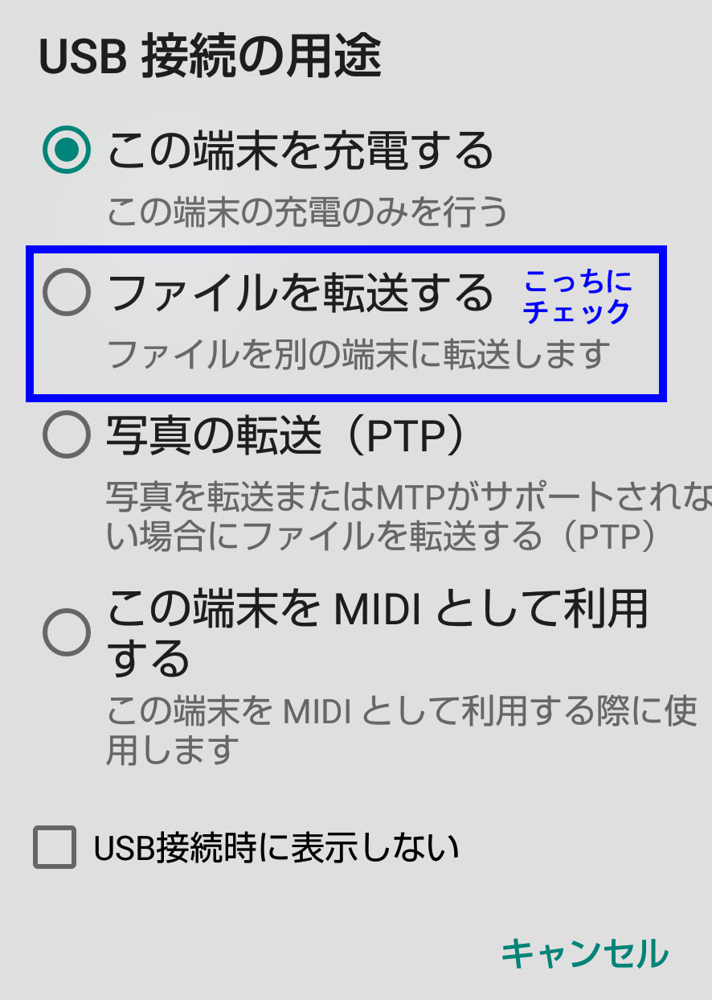
- PCの「MUSIC」フォルダからスマートフォンの「内蔵ストレージ」→「MUSIC」フォルダに直接ドラッグ＆ドロップ。
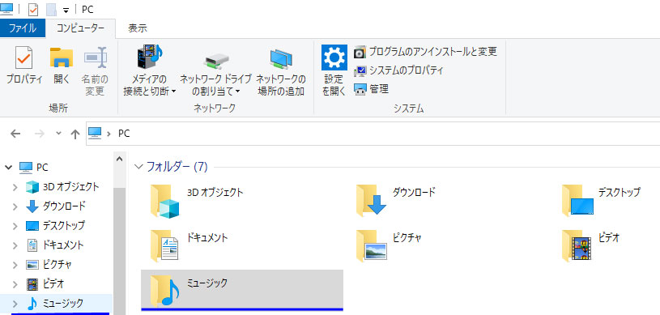
WindowsMediaPlayer
＊機種によって表示が異なります。
-
USBケーブルでパソコンとandroidを接続。
- Android端末で表示される 「ファイルを転送」にチェック
- WindowsMediaPlayerの左側に表示される転送するandroid端末を選択
- 右側「同期」タブをクリック
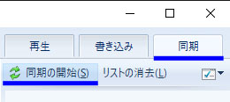
- 左側「音楽」または「プレイリスト」をクリックし楽曲を右下「同期リスト」へドラッグ＆ドロップ
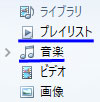
- 右側「同期の開始」をクリック。
アプリでの転送
グーグルのPlay Music等で再生できます。
アプリ
Musicolet無料音楽再生プレーヤー
Musicolet Google Play
画像
基本操作
画像複数選択
画像を”長押し”すると複数選択できるようになります。
壁紙設定
ホーム画面の空いているところを長押しします。
AndroidからWindows10へ画像の移行
フォトアプリ
「USBケーブル」でWindows10とAndroidデバイスを接続します。
インポート
フォルダから
-
「USBケーブル」でWindows10とAndroidデバイスを接続します。
- Android端末に表示される 「ファイル転送」にチェック
- PC上で表示されるAndroid端末をクリック
-
Android端末の撮影画像やスクリーンショットなどのあるフォルダを選択し
画像などデータをWindowsの移動したい場所へドラッグ。
boxアプリ
10GBまで無料のオンラインストレージ
box
Drop boxアプリ
2GBまで無料のオンラインストレージ
CXファイルエクスプローラー
Androidアプリ。Windowsのブラウザから画像表示、ダウンロードできる。

ファイルマネージャー

Bluetooth転送
”androidのみ”。iPhoneでは出来ません。転送速度遅め。
あらかじめandroidとWindowsでペアリングしておき、Android、Windows両方、BluetoothをONにします。
Windows設定
- パソコン画面右下”Bluetoothのアイコン”をクリック（表示されてない場合は△マークをクリック）
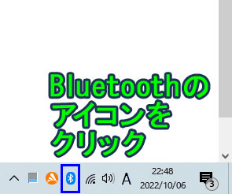
- [ファイルの受信]をクリック
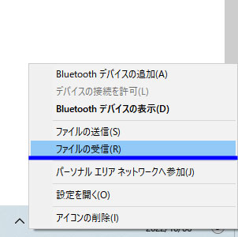
- 「接続の待機中」の表示が現れます

- androidからファイルが送信され受信すると「受信したファイルの保存」の表示が現れます
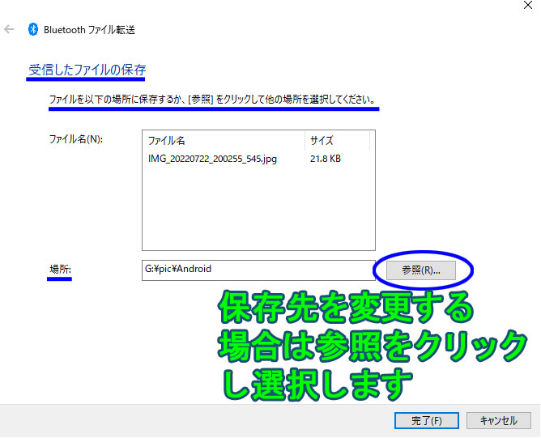
- 「場所」から「参照」をクリックし保存先を選択します（デフォルトでよければそのままでOKです）
- 完了をクリックします
android設定
※機種により異なります
- 送信したいファイルを選択
- 「共有」をクリック
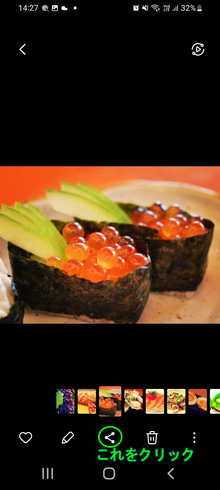
- ［Bluetooth］をクリック
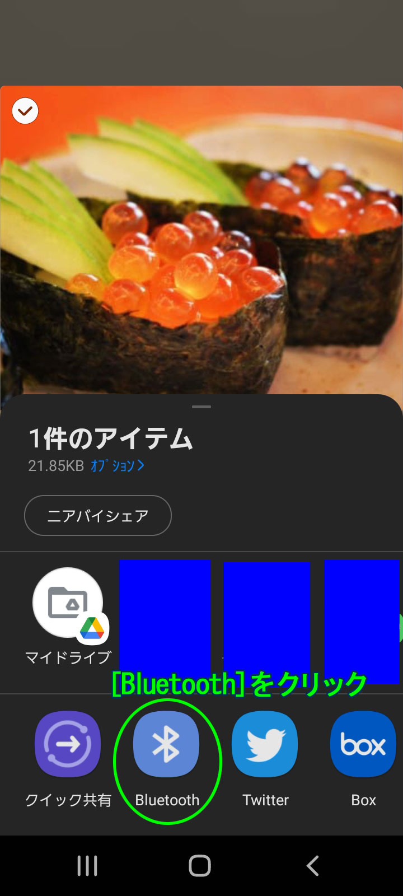
- 「デバイスを選択」の表示になり送信するWindowsを選択します
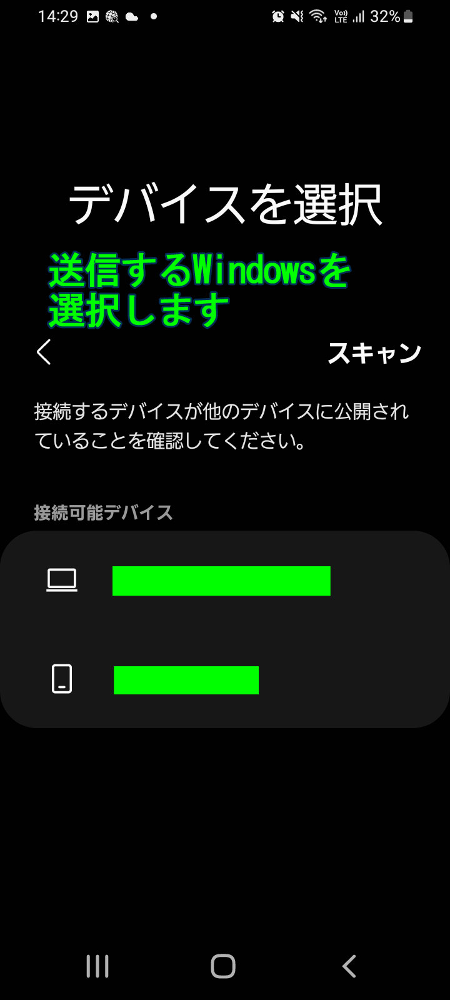
スマホ同期
基本的にWindows10にインストールされているアプリ
iPhoneからWindows10へ
幾つか方法があります。
-
Windows10とアイフォンをLightningケーブルで接続します。
- iPhone上に表示される「このデバイスに写真やビデオへのアクセスを許可しますか？」
の表示の許可にタップ
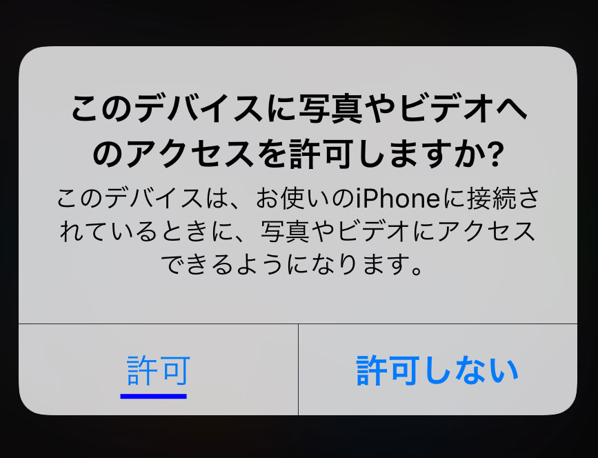
- PC上に表示されるiPhoneをクリック
- 「Internal Storage」
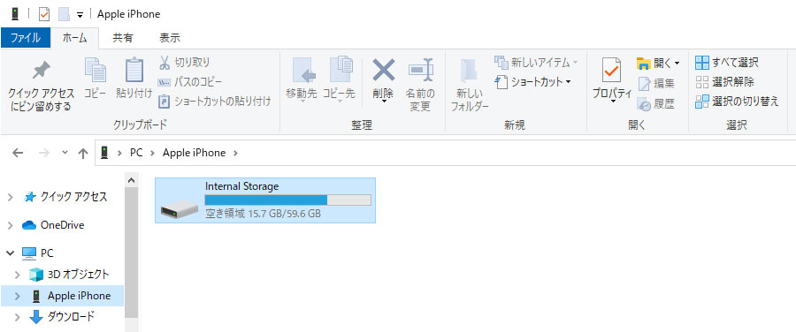
- 「DCIM」
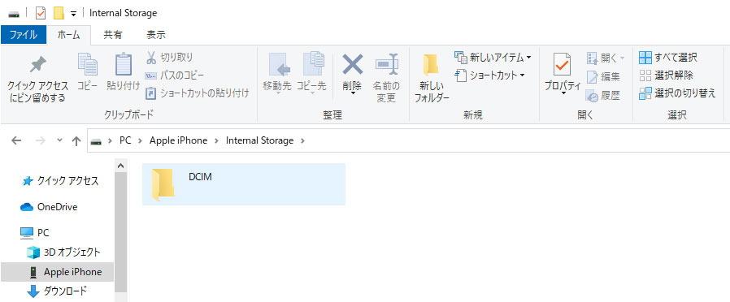
-
「100APPLE」などのフォルダ内に画像があります
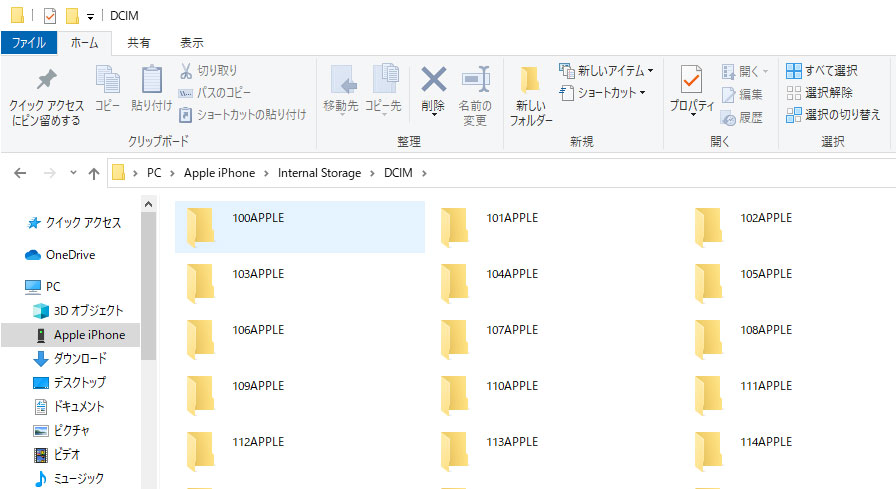
フォトアプリ
-
Windows10とアイフォンをLightningケーブルで接続します。
-
Windows10でフォトアプリを起動します。
- アイフォン
- フォトアプリ右上「インポート」
枚数が多いと時間がかかります。
一括選択、または月ごと選択ができます。
アプリ
Google Play ストア公式
android
アンインストール
-
ホーム画面でアプリを長押しすると画面上部に「アンインストール」が表示されますので、アプリをそこまでドラッグします。
- Playストアからアンインストール
内部ストレージ
機種によって表示が異なります。Android本体、またPCとつないで確認することができます。
Android本体から設定→ストレージ
DCIM
Digital Camera IMagesの略になります。
本体カメラ撮影のデータ等が入っているフォルダが中にあります。
「Camera」、「100ANDRO」、「100SHARP」などメーカー毎に異なるフォルダの中に本体カメラ撮影のデータがあります。
Picture
もしくはPictures。
「スクリーンショット」や「Twitter」などのSNSの画像があるフォルダあります。
Download
Chrome、Firefoxなどブラウザからダウンロードした画像、ファイルが保存されます。
デザリング
「Wi-Fi」「Bluetooth」「USB」の3つの方法があります